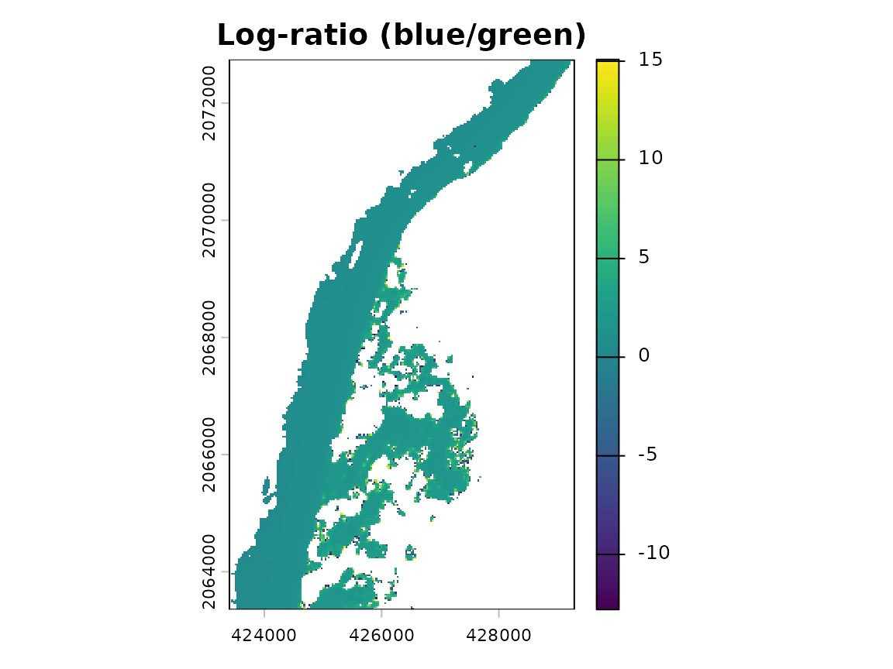
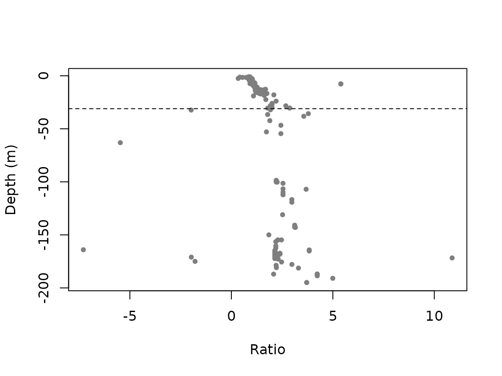
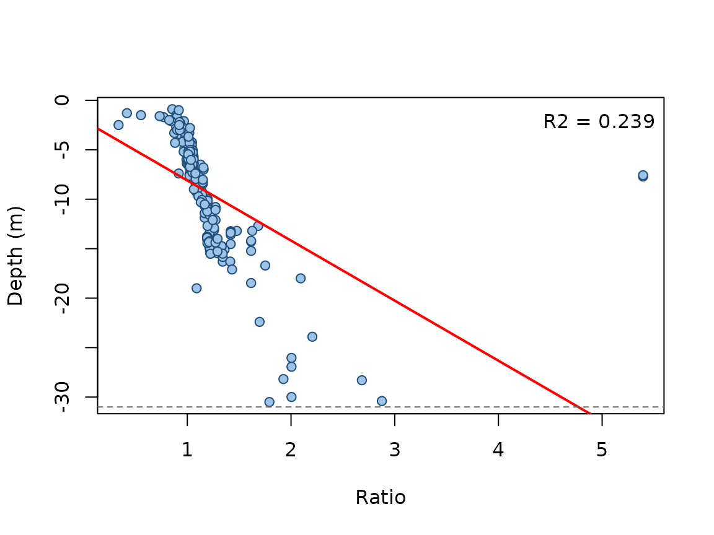

Overview
satbathy estimates water depth in shallow, low-turbidity coastal waters from multispectral satellite imagery using the empirical log-ratio transform of Stumpf, Holderied and Sinclair (2003). The idea is simple: two visible bands (typically blue and green) are attenuated at different rates as depth increases, so the ratio of their log-transformed reflectance is, over a useful range, linearly related to depth. That linear relationship is calibrated with a handful of in situ soundings and then applied to the whole image.
This vignette walks through the full workflow on the bundled example dataset, a Landsat scene with in situ bathymetry from Mahahual, on the Mexican Caribbean coast.
library(satbathy)
library(terra)
img <- rast(system.file("extdata", "example_sr.tif", package = "satbathy"))
pts <- vect(system.file("extdata", "example_points.gpkg", package = "satbathy"))
deep <- vect(system.file("extdata", "example_deepmask.gpkg", package = "satbathy"))
img
#> class : SpatRaster
#> size : 313, 196, 5 (nrow, ncol, nlyr)
#> resolution : 30, 30 (x, y)
#> extent : 423405, 429285, 2063355, 2072745 (xmin, xmax, ymin, ymax)
#> coord. ref. : WGS 84 / UTM zone 16N (EPSG:32616)
#> source : example_sr.tif
#> names : coastal, blue, green, red, nir
#> min values : -0.062473, -0.05271, -0.030242, -0.03368, -0.019462
#> max values : 0.130357, 0.192865, 0.243905, 0.17939, 0.100135The image holds five surface-reflectance bands named
coastal, blue, green,
red and nir. The points carry a
depth attribute (metres, negative below the surface).
1. Selecting clear-water dates
The ratio transform performs best in clear water, so the first
practical step is to pick the least turbid dates from an image time
series. turbidity_index() implements the index of Frohn and
Autrey (2009), (green + red) / blue; lower values mean
clearer water. Here we simply summarise it for the single example
scene.
turb <- turbidity_index(img)
global(turb, "mean", na.rm = TRUE)
#> mean
#> turbidity 0.8363226In practice you would compute this index for every date and choose the minima (for example with a moving-average smoother over the time series).
2. Masking land and clouds
Only water pixels should enter the model. When a sensor quality band is not available, a threshold on the Normalized Difference Water Index works well:
wm <- water_mask(img, green = "green", nir = "nir", threshold = 0)
img_water <- mask(img, wm, maskvalues = c(FALSE, NA))Sensor-specific preprocessing. The bundled image is already surface reflectance, cropped and land/cloud masked. Producing such an image from raw archives depends on the sensor and is intentionally left outside the package, but the recipe is:
-
Landsat 8/9 (Collection 2 L2). Scale the
SR_B*bands with theREFLECTANCE_MULT_BAND/REFLECTANCE_ADD_BANDvalues in the MTL metadata, and build masks from theQA_PIXELbit flags (water bit; dilated cloud, cirrus, cloud and cloud-shadow bits). -
Sentinel-2 (L2A). Use the Scene Classification
Layer (
SCL) to keep water and discard clouds and shadows; reflectance is theB*bands divided by the quantification value. -
PlanetScope / SuperDove (L2 SR). There is no
reliable water class in the UDM2 mask, so derive a water mask from the
NDWI as above with
ndwi()/water_mask().
3. Optional glint and smoothing
Sun glint can be removed with the image-based method of Hedley et al. (2005), which regresses each visible band on the near-infrared over optically deep water (supplied as a polygon mask). A low-pass filter then reduces residual speckle. Both steps are optional and, in very calm, uniform waters, make little difference.
img_gc <- correct_glint(img_water, vis_bands = c("blue", "green"),
nir_band = "nir", deep_mask = deep)
img_gc <- lowpass_filter(img_gc)4. The log-ratio transform
ratio <- log_ratio(img_gc, blue = "blue", green = "green", n = 10000)
plot(ratio, main = "Log-ratio (blue/green)")
Darker offshore tones correspond to higher ratio values, i.e. greater depth.
5. Calibration
Pair the ratio with the in situ depths, then decide how deep the
signal is reliable. optimal_max_depth() refits the model
for a decreasing sequence of maximum-depth thresholds: goodness of fit
rises as the linear range fills in and then drops once saturated
(too-deep) points are included.
tab <- extract_ratio(ratio, pts, depth_field = "depth")
md <- optimal_max_depth(tab)
plot(md$max_depth, md$r2, type = "b",
xlab = "Maximum depth (m)", ylab = "Adjusted R-squared")
best <- md$max_depth[which.max(md$r2)]
best
#> [1] -31The scatter makes the saturation explicit: beyond the penetration limit the ratio no longer increases with depth.
plot(tab$ratio, tab$depth, pch = 20, col = "grey50",
xlab = "Ratio", ylab = "Depth (m)")
abline(h = best, lty = 2)
Now fit the model over its valid range and inspect it:
fit <- fit_bathymetry(tab, max_depth = best)
fit
#> <satbathy_model>
#> depth = -2.036 + -6.072 * ratio
#> points: 277 (max_depth = -31 m)
#> adjusted R-squared: 0.239
plot(fit)
6. Depth map and accuracy
Apply the calibrated model to the ratio raster to obtain a depth map:
depth_map <- predict_bathymetry(fit, ratio)
plot(depth_map, main = "Satellite-derived bathymetry (m)")For an honest error estimate, hold out independent points within the
valid depth range and score them with
evaluate_bathymetry():
valid <- tab[tab$depth > best, ]
set.seed(1)
i <- sample(nrow(valid), round(0.7 * nrow(valid)))
train <- valid[i, ]
test <- valid[-i, ]
fit_tr <- fit_bathymetry(train)
evaluate_bathymetry(fit_tr, test)
#> n rmse mae
#> 1 83 12.25251 4.068439References
- Frohn RC, Autrey BC (2009). Water quality assessment in the Ohio River using new indices for turbidity and chlorophyll-a with Landsat-7 imagery. U.S. EPA.
- Hedley JD, Harborne AR, Mumby PJ (2005). Simple and robust removal of sun glint for mapping shallow-water benthos. International Journal of Remote Sensing 26(10):2107-2112.
- McFeeters SK (1996). The use of the Normalized Difference Water Index (NDWI) in the delineation of open water features. International Journal of Remote Sensing 17(7):1425-1432.
- Stumpf RP, Holderied K, Sinclair M (2003). Determination of water depth with high-resolution satellite imagery over variable bottom types. Limnology and Oceanography 48(1, part 2):547-556.